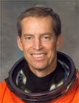

Lyndon B. Johnson Space Center
Houston, Texas 77058
|
National Aeronautics and Space Administration Lyndon B. Johnson Space Center Houston, Texas 77058 |
 |
Biographical Data |
||
James D. Wetherbee (Captain, USN Ret.)
NASA ASTRONAUT (FORMER)
PERSONAL DATA: Born November 27, 1952, in Flushing, New York. Raised in Huntington Station, New York. Married to the former Robin DeVore Platt of Jacksonville, Florida.
EDUCATION: Graduated from Holy Family Diocesan High School, South Huntington, New York, in 1970; received a bachelor of science degree in aerospace engineering from the University of Notre Dame in 1974.
ORGANIZATIONS: Lifetime Member of the Society of Experimental Test Pilots; Honorary Member, Musicians’ Union, Local 47, American Federation of Musicians, Los Angeles, CA.
SPECIAL HONORS: Distinguished Flying Cross; Navy Achievement Medal; two Meritorious Unit Commendations; six Space Flight Medals; two Outstanding Leadership Medals; four Distinguished Service Medals.
EXPERIENCE: Wetherbee received his commission in the United States Navy in 1975 and was designated a naval aviator in December 1976. After training in the A-7E, he was assigned to Attack Squadron 72 (VA-72) from August 1977 to November 1980 aboard the USS John F Kennedy and logged 125 night carrier landings. After attending the U.S. Naval Test Pilot School, Patuxent River, Maryland, in 1981 he was assigned to the Systems Engineering Test Directorate. He was a project officer and test pilot for the weapons delivery system and avionics integration for the F/A-18 aircraft. Subsequently assigned to Strike Fighter Squadron 132 (VFA-132), he flew operationally in the F/A-18 from January 1984 until his selection for the astronaut candidate program. He has logged over 7,000 hours flying time in 20 different types of aircraft, including 345 carrier landings.
NASA EXPERIENCE: Selected by NASA in May 1984, Wetherbee became an astronaut in June 1985. A veteran of six space flights, Wetherbee logged over 1,592 hours in space, and is the first American to command five space missions. He was the pilot on STS-32 (1990), and was the mission commander on STS-52 (1992), STS-63 (1995), STS-86 (1997), STS-102 (2001), and STS-113 (2002). He served as Deputy Director of the Johnson Space Center (August 1995 to April 2000), Director of the Flight Crew Operations Directorate (April 2000-2002), and Technical Assistant to the Director of JSC’s Safety & Mission Assurance Directorate (April 2003 to June 2004). Wetherbee left NASA in January 2005 to form Escape Trajectory LLC. In December 2006, he began working as a Safety Auditor with BP.
SPACE FLIGHT EXPERIENCE: Pilot, STS-32 Columbia (January 9-20, 1990). Rendezvous and recovery of the 21,400-pound Long Duration Exposure Facility (LDEF) satellite. Intended for retrieval after one year, the LDEF satellite was stranded in orbit for six years after the Challenger accident. The crew recovered the LDEF from its decaying orbit two months before it would have re-entered the Earth’s atmosphere and would have been destroyed. The crew deployed the Syncom IV-F5 satellite, operated a variety of mid-deck experiments, and conducted numerous medical test objectives, including in-flight aerobic exercise and muscle performance to evaluate human adaptation to extended duration missions. Mission duration was 261 hours in 173 orbits.
Commander, STS-52 Columbia (October 22 to November 1, 1992). Deployed the Laser Geodynamic Satellite (LAGEOS). Researchers on this joint Italian-American project have measured the speed of tectonic plate movement of the California shelf with an accuracy of 7 centimeters per year. Separately, after analyzing the motion of LAGEOS for 11 years, scientists confirmed the “Frame Dragging” effect, a key prediction of Einstein's general theory of relativity, which proves the mass of the earth drags spacetime with it as it rotates. The crew operated the first U.S. Microgravity Payload (USMP) with French and American experiments, and successfully completed the initial flight tests of the Canadian-built Space Vision System (SVS). Mission duration was 236 hours.
Commander, STS-63 Discovery (February 2-11, 1995). First American flight operations with the Russian Space Station, Mir; first flight with NASA woman pilot. This test flight was a checkout of the rendezvous and navigation procedures, and included a close approach of the 100-ton Space Shuttle to 10 meters from the docking port of Mir. The mission included operation of the Spacehab module and associated experiments, and the deployment and retrieval of the Spartan-204 satellite. The mission was accomplished in 198 hours in 129 orbits.
Commander, STS-86 Atlantis (September 25 to October 6, 1997). This was the seventh mission to rendezvous and dock with the Russian Space Station Mir. This was the first flight to dock with the damaged Mir after the collision with the Russian Progress vehicle, which impacted and depressurized the Spectr module of Mir. Highlights included the delivery of a Mir attitude control computer, which had failed on the three previous Sundays before the launch of Atlantis. The flight involved the exchange of U.S. crewmembers, the first space walk by a Russian Cosmonaut, Vladimir Titov, from an American vehicle, the transfer to Mir of 10,400 pounds of science and logistical equipment, and the return of experiment hardware and results to Earth. Mission duration was 259 hours in 169 orbits.
Commander, STS-102 Discovery (March 8-21, 2001). This was the first crew exchange mission to the permanently inhabited International Space Station. Mission accomplishments included the delivery of the Expedition Two crew and the contents of the Leonardo Multi-Purpose Logistics Module, the completion of two successful space walks, the return to earth of the Expedition One crew, as well as the return of Leonardo, the reusable cargo carrier built by the Italian Space Agency. Mission duration was 307 hours and included the longest docked time of any space mission.
Commander, STS-113 Endeavour (November 23-Dec 7, 2002). This was the first combined crew exchange and major assembly mission to visit the International Space Station. Mission accomplishments included the delivery of the Expedition Six crew, the delivery, installation and activation of the P1 Truss, and the transfer of cargo from Shuttle to the Station. During the mission, the robot arm of the Space Shuttle Endeavour was used to hand the 28,000 pounds-mass truss to the Station for installation. STS-113 returned the Expedition Five crew to earth following their 6-month stay aboard the Station. Mission duration was 330 hours.
JANUARY 2007
{kind=link}